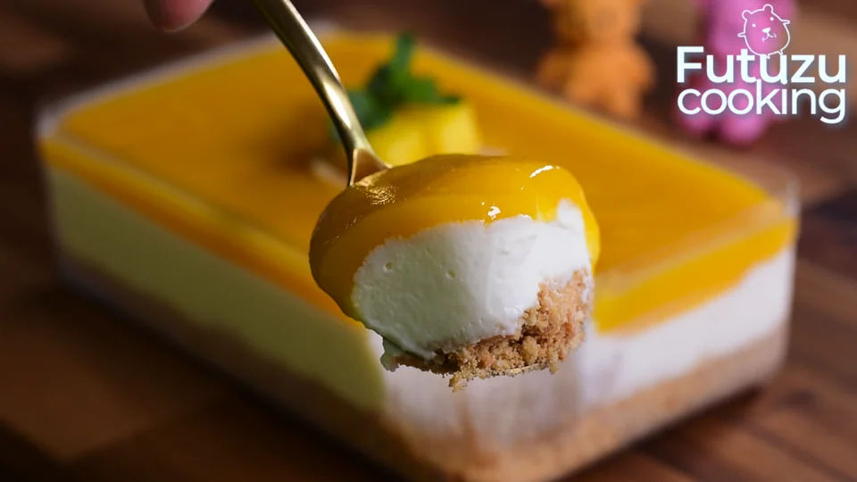

Mango Dessert

INGREDIENTS
- 120g Biscuits
- 25g Melted butter
- 1 Mango
- 250g Mascarpone
- 50g Sugar
- 75ml Heavy cream
- 1/2 Tsp Vanilla Extract
STEPS
- To make the biscuit base, finely crush the biscuits by putting into a sealed plastic bag
and bashing with a rolling pin (alternatively, pulse to crumbs using a food processor)
- Pour the melted butter over the biscuit crumbs and mix, until thoroughly combined
- Put the crumb mixture into a mold and press down evenly with your fingers or using a spoon
- Cut the mango into small cubes
- Blend the mango cubes using an immersion blender until smooth
- In a bowl, put 250g Mascarpone
- Add 50g Sugar
- Add 1/2 Tsp Vanilla Extract
- Mix well, then add 75ml Heavy cream, and mix well again
- Spread the mascarpone cream on the surface of the biscuits
- Pour the Mango coulis on top
- (Optional) Refrigerate it until desired temperature